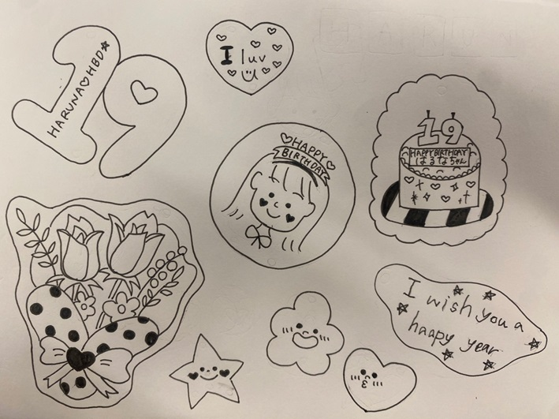
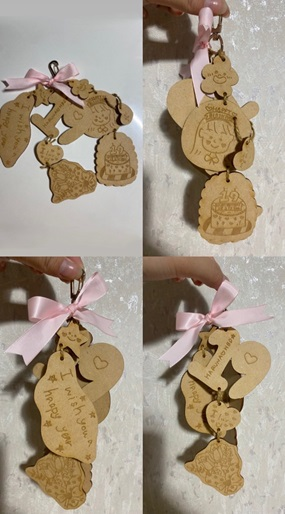
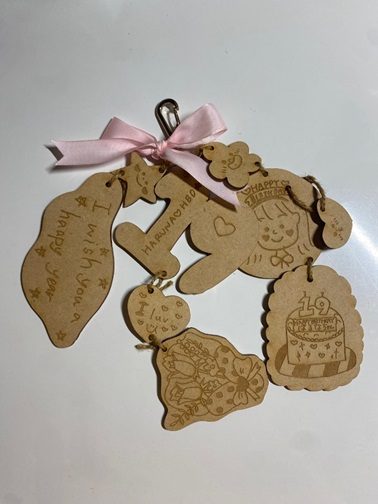
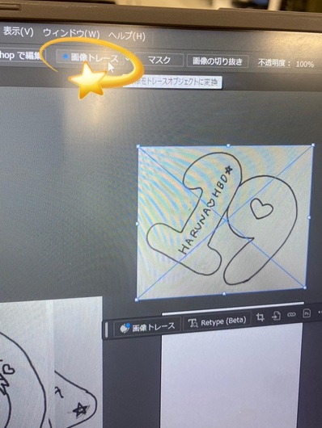
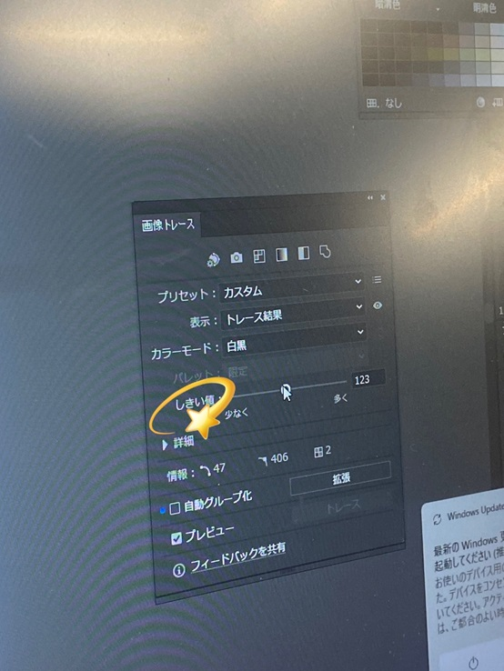
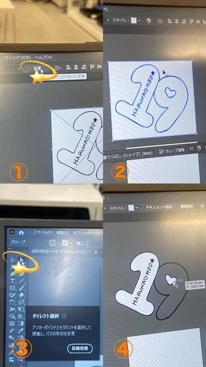
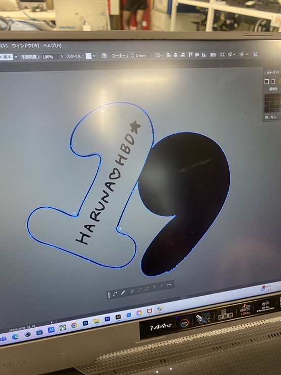
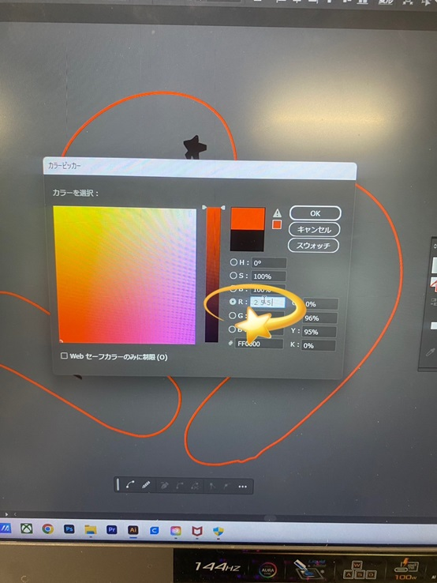
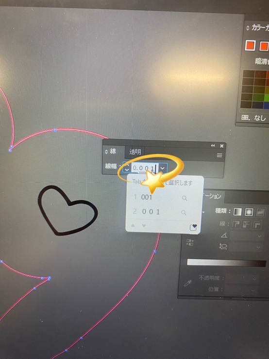

今回の課題はレーザー加工機を使って、限られた材料＆制約の中で自分や他人の心を動かす何かを作ってみるというものだ。
友達のHarunaちゃんがもうすぐ誕生日なので、プレゼント出来るものを作ろうと考えた。
Harunaちゃんの心を「嬉しい」「可愛い」という感情で心を動かせられるものを作り上げた。
構想段階スケッチ

19歳になるので「19」の数字の形や、バースデーケーキ、花束など、‟ 誕生日 ”をモチーフにしている。
特に何かを参考にしてイラストを描いている訳ではなく、私が「可愛い」と直感的に感じられるものをスケッチした。
完成品の写真


色んな形のキーホルダーに穴をあけてつなげたのがポイントだ。
可愛くなるようにリボンもつけた🎀💝💖
バースデーキーホルダーのaiファイルはこちら
制作POINT・調べたこと
💛1.画像トレース
自分がスケッチしたイラストをそのまま形にしたい時は、Fusionよりもイラストレーターの方が簡単だと聞いたので、今回はイラストレーターで作業した。
まず、画像を挿入したら画像トレースを行う。画像トレースとは、画像をデジタルデータに変換することだ。
「しきい値」というのを少なくしたり、多くすることで画像の「モヤモヤ」がなくる。これをすべての画像でやっていった。
 
💛2.いらないところを削除する
「拡張」を押して、画像を選択する。（ 線が青く表示される。）白い矢印マークを選択し、白い要らない所を消していく。

💛3.線を一本にして、太さと色を変える
スケッチした線は一本に見えて内側と外側で２本ある為、どちらかを消す必要がある。
線を消すと内側が黒くなる。内側は色なしで選択し、掘りたい外側の線は赤色にする。
赤は赤でも色んな赤色があるが、純粋な赤色である必要があるため、R 255と入力する。
線の太さは0.001に設定する。あとはファイルをレーザーカッターように保存してプリントするのみ！！



実際にHarunaちゃんはとても喜んでくれたので、私自身も嬉しくなった。
誰かのためにものを作ることの楽しさも知ることができた。
💕おわり💕